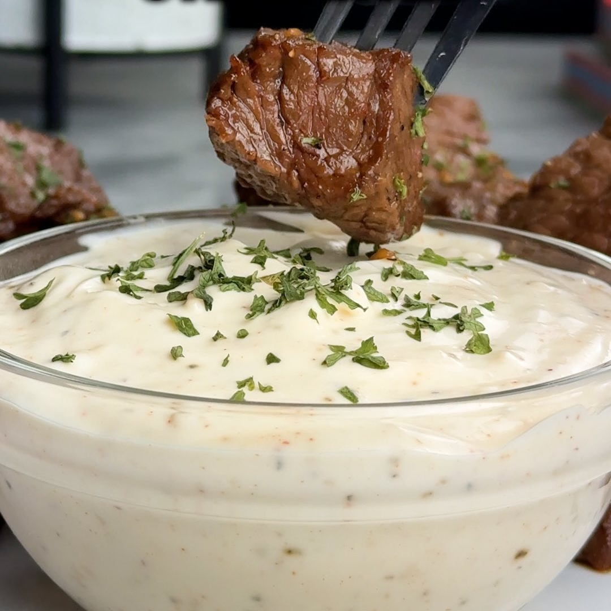

Bites de Carne Ajo y Miel
Ingredientes:
- 32 oz de Top Sirloin (905 g)
- 1/2 taza de salsa de soja (120 ml)
- 1/4 taza de miel (80 g)
- 2 cucharadas de ajo picado (15 g)
- 1 cucharada de aceite de oliva (15 ml)
- 1 cda de cebolla en polvo
- 1 cda de pimentón
- 1 cda de pimienta
Instrucciones:
- Corta en trozos el sirloin
- En un bowl añade salsa de soya, miel, ajo, aceite de oliva, cebolla en polvo, paprika, pimienta y
mezclalos
- Añade el sirloin a una bolsa ziploc y vierte la marinada sobre la carne
- Manda la bolsa al refrigerador por al menos 1 hr
- Añadelo a la bandeja de la airfryer ya engrasado y que se cocine a 204°C por 10 a 12 mins